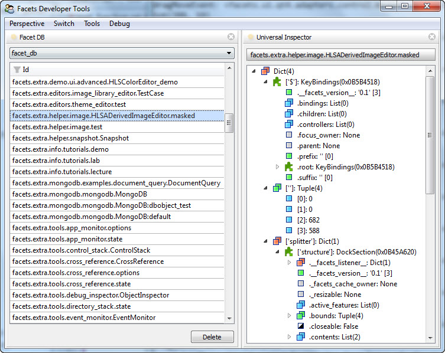
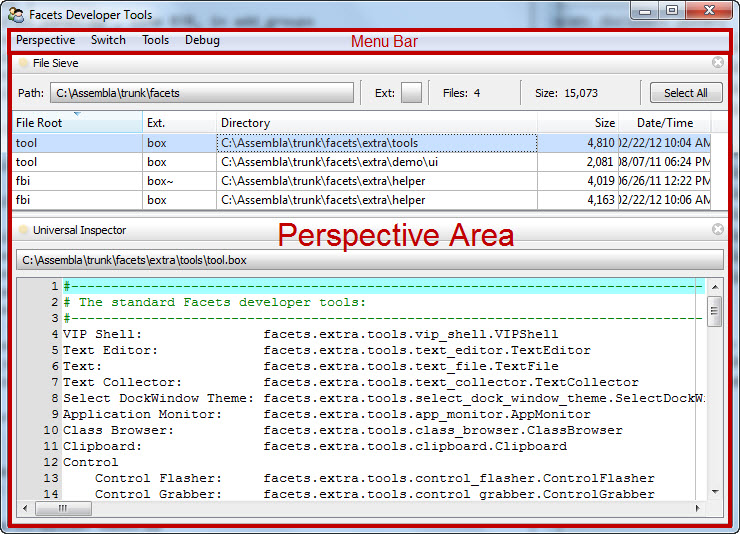
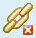
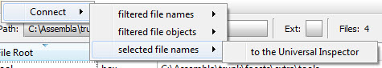
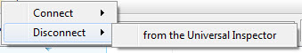

The Facets package provides a high-level tools function that takes all of the capabilities of the low-level tools framework and wraps them in an easy to use user interface that allows you to create a customizable tools environment that can be invoked from the command line or embedded within your application.
A screen shot of a typical tools environment in use is shown below:
We’ll start the discussion of the tools function by providing a quick overview of some of the key facilities that it provides:
A tools environment created using the tools function makes available a collection of tools for you to choose from. This collection of tools is (somewhat unsurprisingly) referred to as a toolbox. You can either use one of the standard toolboxes supplied with Facets or create your own custom toolboxes including any of the standard Facets tools or any custom tools you create or acquire.
A toolbox is defined using a simple text file, usually with a .box extension, that describes:
Defining a toolbox using an external text file makes it easy to update the contents of the toolbox and to share the toolbox across multiple tool environments.
As mentioned previously, the collection of tools supported by a particular tools environment is defined by a toolbox whose description is contained in a simple text file, usually with a .box file extension. The Facets package includes several toolbox files:
A valid toolbox file can contain the following three types of lines:
Like Python, the contents of a toolbox file are sensitive to leading white space. Lines with greater levels of indenting that follow a section are considered to be part of the preceding section. Sections can also be nested by increasing the amount of indenting used to start a new level.
To illustrate these rules, the following example shows the beginning part of the default Facets toolbox file:
#-------------------------------------------------------------------------------
# The standard Facets developer tools:
#-------------------------------------------------------------------------------
VIP Shell: facets.extra.tools.vip_shell.VIPShell
Text Editor: facets.extra.tools.text_editor.TextEditor
Text: facets.extra.tools.text_file.TextFile
Text Collector: facets.extra.tools.text_collector.TextCollector
Select DockWindow Theme: facets.extra.tools.select_dock_window_theme.SelectDockWindowTheme
Application Monitor: facets.extra.tools.app_monitor.AppMonitor
Class Browser: facets.extra.tools.class_browser.ClassBrowser
Clipboard: facets.extra.tools.clipboard.Clipboard
Control
Control Flasher: facets.extra.tools.control_flasher.ControlFlasher
Control Grabber: facets.extra.tools.control_grabber.ControlGrabber
Control Stack: facets.extra.tools.control_stack.ControlStack
Cross Reference: facets.extra.tools.cross_reference.CrossReference
Drop Zone: facets.extra.tools.drop_zone.DropZone
Debugging
Event Monitor: facets.extra.tools.event_monitor.EventMonitor
FBI Viewer: facets.extra.tools.fbi_viewer.FBIViewer
Breakpoints: facets.extra.tools.breakpoints.Breakpoints
Heap Browser: facets.extra.tools.heap_browser.HB_HeapBrowser
Listener: facets.extra.tools.listener.Listener
Traceback Viewer: facets.extra.tools.traceback_viewer.TracebackViewer
Wiretap: facets.extra.tools.wiretap.Wiretap
...
Most of the lines in the example define tools, with the two lines containing Control and Debugging defining the beginning of user interface sections. Note the use of indenting to define the contents of a section.
There are several ways to create a tools environment using the tools function. If you just want to use the standard Facets toolbox, you can create a tools environment directly from the command line using:
python -m facets.extra.tools.run
However, if you want full control you can create a standard or custom tools environment in your own code by directly invoking the tools function contained in the facets.extra.tools.tools module. The signature for the tools function is as follows:
tools( object = None, application = ‘Facets’, tools = None, toolbox = None, show = True )
As you can see, all arguments are optional, with a call to tools() simply creating a tools environment using the standard Facets toolbox. The meaning of the various arguments are as follows:
Specifies a Toolbox object describing the set of tools (i.e. toolbox) made available to each perspective in the environment. If not specified or None, the default Facets toolbox is used. To use a custom toolbox, create a text file containing a description of the toolbox as described in the Defining a Custom Toolbox section, and then pass a value of the form: Toolbox( file_name = file_name ) as the toolbox argument, where file_name is the name of the toolbox text file you created. The Toolbox class is defined in the facets.extra.tools.tools module.
In order to make specifying the toolbox file easier, you can leave the path information off of the file name if the file is in the same directory as the module creating the Toolbox object or one of its callers. The Toolbox class automatically searches for the toolbox file in the directories referenced by modules in the Python call stack.
The result of calling the tools function is a Tools object representing the tools environment. If you specified show = False, you will need to explicitly call the edit_facets method on the result to display the tools environment.
The user interface for the tools environment is divided into two areas, as shown in the following screen shot:
When you first start a tools environment it automatically loads the last perspective used. If this is the first time starting a particular environment, the Default perspective is loaded. If you want to use a different perspective, simply click on the Switch menu bar item and select a different perspective from the drop-down menu list.
If you want to create a new perspective, select the Perspective/New... entry from the menu and enter a name for your new perspective in the pop-up dialog that appears.
Depending upon the arguments passed to the tools function, a newly created perspective may be initially empty or populated with a default set of tools which you can either use, add to or delete. To delete a tool, click the X icon on the right side of its tab. To add a new tool to the perspective, click the Tools menu bar item and select the tool you want to add from the drop-down menu list. The contents of the menu list directly reflect the contents and structure of the toolbox file provided to the tools function.
If you want, you can add more than one copy of a particular tool to the perspective. Additional copies have a numeric suffix appended to their tab name (e.g. Universal Inspector 2).
Once tools have been added to the perspective area you can visually organize them any way you want using standard tab dragging, docking and splitter bar adjustments. The layout you create is automatically persisted as part of the perspective definition.
In most cases you will also want to create connections between the tools you have added. This can be done in one of two ways.
Method 1: Hover the mouse pointer over the feature icon for one of the two tools to connect and click on the tool’s connection icon:
Then select the connection you want to make from the pop-up menu that appears. For example:
The popup menu reflects the available connections that can be made between the selected tool and all other tools currently in the perspective.
Method 2: Hover the mouse pointer over the feature icon for one of the two tools to connect then click and drag on the tool’s connection icon. As you drag, the other tools within the perspective that you can connect to update their feature icon to indicate that they are valid drop targets:
Position your pointer over a tool showing the drop target and release it to make a connection. If the two tools have more than one possible connection that can be made between them, a pop-up menu allowing you to choose the connection you want appears. Select the desired item to complete the connection. If only one legal connection is possible, the connection is made automatically without displaying a pop-up menu.
Note that if you do not see the connection icon when you hover over a tool’s feature icon it means that the tool does not support the connection feature.
You can break existing connections between tools using two different approaches as well.
Method 1: Hover the mouse pointer over the feature icon for one of the two tools to disconnect and click on the tool’s connection icon, just as if you were going to make a connection. If the tool already has existing connections, the pop-up menu that appears will also have a section for breaking connections:
Select the connection you want to break to complete the disconnection.
Method 2: If you no longer need one of the tools you want to disconnect, simply close it by clicking its tab’s X icon. Closing a tool breaks all connections it has with other tools in the same perspective.
As mentioned in the previous section, selecting the Perspective/Export as stand-alone tool.. menu option allows you to create a new Python source module which implements the tools contained in the current perspective, along with their layout and connections, as a completely stand-alone tool that can be invoked from the command line or shared with other developers.
When you select this menu option, a dialog similar to the following appears:
The bottom half of the dialog shows you the source code for the module being exported. The top half contains a number of fields allowing you to specify various options for the exported code:
When you have adjusted the values as needed, click the Save button to save the the exported tool to the specified file. The following shows an example of the code generated when the Save button is clicked:
"""
--------------------------------------------------------------------------------
FileSieve: A Facets component tool.
--------------------------------------------------------------------------------
Generated by: facets.extra.tools.tools
Perspective: File Sieve
Date/Time: Thursday, March 01, 2012 at 04:56:09 PM
Component Tools: FileSieve
UniversalInspector
Supported Features: DebugFeature
DragDropFeature
OptionsFeature
SaveStateFeature
--------------------------------------------------------------------------------
"""
#-------------------------------------------------------------------------------
# Imports:
#-------------------------------------------------------------------------------
from cPickle \
import loads
from facets.api \
import HasPrivateFacets, List, Any, Instance, View, Item, NotebookEditor
from facets.extra.tools.file_sieve \
import FileSieve
from facets.extra.tools.universal_inspector \
import UniversalInspector
from facets.extra.features.debug_feature \
import DebugFeature
from facets.extra.features.drag_drop_feature \
import DragDropFeature
from facets.extra.features.options_feature \
import OptionsFeature
from facets.extra.features.save_state_feature \
import SaveStateFeature
#-------------------------------------------------------------------------------
# 'FileSieve' class:
#-------------------------------------------------------------------------------
class FileSieve ( HasPrivateFacets ):
#-- Class Constants --------------------------------------------------------
# The pickled string form of the layout template used by the tool contents:
_template = "cfacets.core.facet_defs\n..."
#-- Facet Definitions ------------------------------------------------------
# The component tools:
tool_1 = Instance( FileSieve, { 'name': 'File Sieve' } )
tool_2 = Instance( UniversalInspector, { 'name': 'Universal Inspector' } )
# The list of all component tools:
tools = List
# The layout template for the tools:
template = Any
#-- Facet View Definitions -------------------------------------------------
def default_facets_view ( self ):
""" Returns the View to use with this perspective.
"""
return View(
Item( 'tools',
style = 'custom',
show_label = False,
id = 'tools',
editor = NotebookEditor(
features = [
DebugFeature,
DragDropFeature,
OptionsFeature,
SaveStateFeature
],
dock_style = 'tab',
page_name = '.name',
template = 'template'
)
),
title = 'File Sieve Tool',
id = 'facets.extra.tools.tools.generated.FileSieve',
resizable = True,
width = 0.5,
height = 0.328
)
#-- HasFacets Method Overrides ---------------------------------------------
def facets_init ( self ):
""" Initializes all of the inter-tool connections.
"""
self.tools = [
self.tool_1,
self.tool_2
]
#-- Facet Default Values ---------------------------------------------------
def _template_default ( self ):
return loads( self._template )
#-- Start the tool (if invoked from the command line) --------------------------
if __name__ == '__main__':
FileSieve().edit_facets()
#-- EOF ------------------------------------------------------------------------
Note that the generated code is set up so that it can be invoked directly from the command line. For example:
python file_sieve.py
It can also easily be embedded and invoked from other applications. For example, the following code could be used to display a pop-up version of the tool:
from file_sieve import FileSieve
...
FileSieve().edit_facets()
It can also be included as part of another application view:
from file_sieve import FileSieve
...
class MyApp( HasFacets ):
...
sieve = Instance( FileSieve, () )
...
view = View(
...
UItem( 'sieve', style = 'custom' ),
...
)